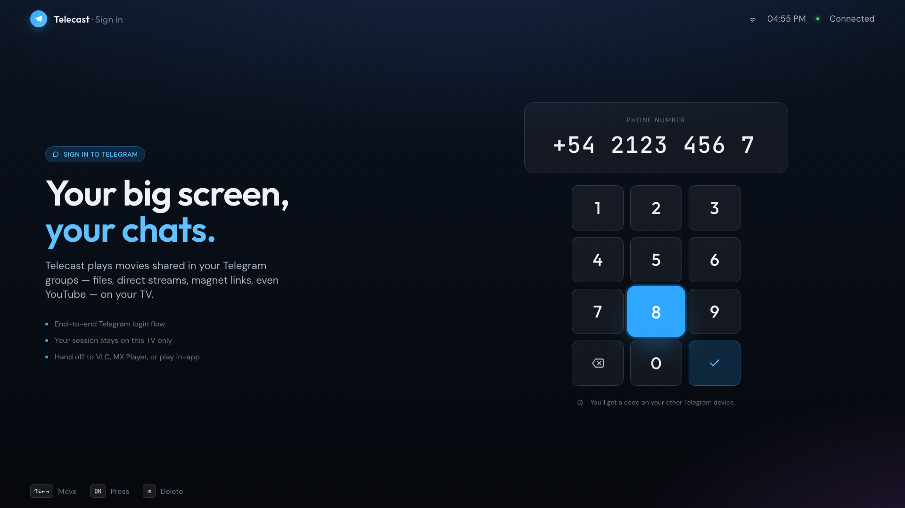
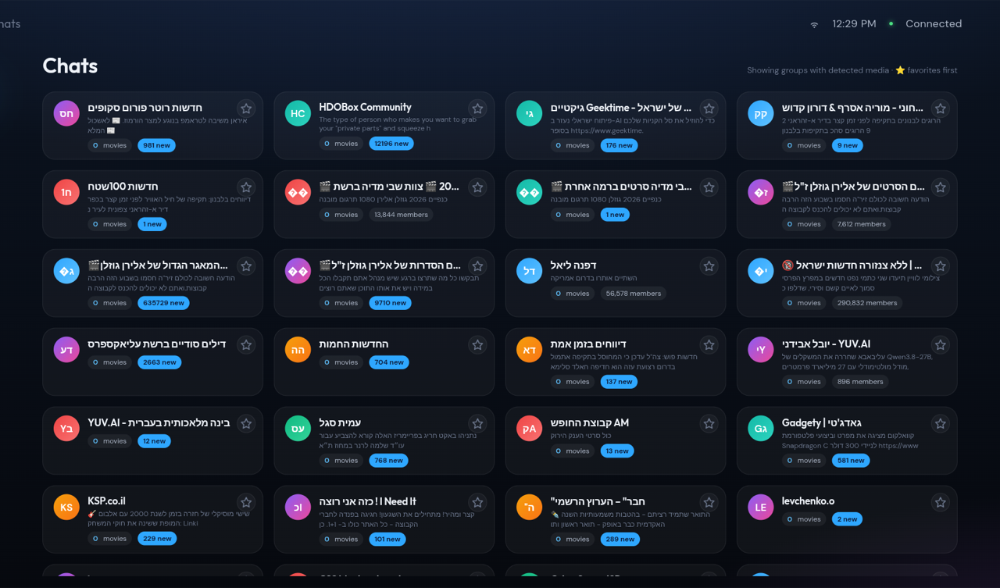
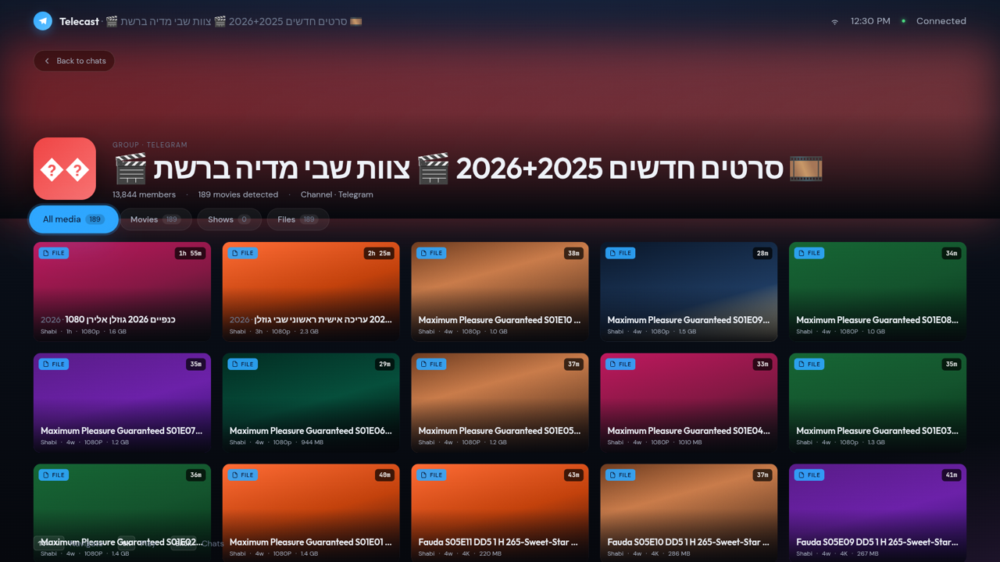
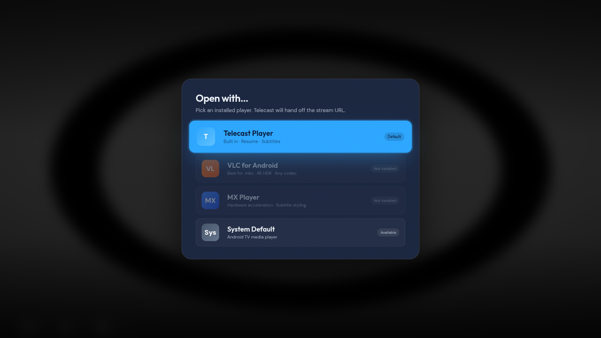

Telecast signs into your Telegram account, scans the chats you're already in for videos, and turns them into a library you browse with the TV remote — no phone, no cables, no downloads to manage.
v1.6 · Android TV 7.0 or newer · Google TV, Fire TV, NVIDIA Shield, TV boxes
The easiest route on a TV is the free Downloader app by AFTVnews — it's on every Android TV / Fire TV store. Install that first, then use the code below.
The code fetches this page's APK directly. No computer, no USB stick, no adb.
Settings → Apps → Special app access → Install unknown apps → turn on Downloader. Android grants this per app, so it must be the app you install from.
Downloader fetches the APK and offers to install it. Choose Install, then Done.
It registers as a proper TV app, so it appears alongside your other apps — not buried in a phone-apps drawer.
Enter your number on the keypad, then the 5-digit code Telegram sends to your other devices. If you use two-factor, a cloud-password screen follows. The session stays on that TV.
Already have Telecast installed? If it was put there with a different build,
Android refuses the upgrade and shows a bare “App not installed”. Uninstall the old copy first
(Settings → Apps → Telecast → Uninstall), then install again.
Still refusing right after the uninstall? Restart the TV, then install. Android
can hold on to the old app’s registration until the system restarts, and it keeps rejecting the
new copy until it lets go.
Everything is driven by the D-pad. Arrows move, OK opens, BACK goes up a level.




Built for the way people actually share films — as files and links dropped into a group chat.
Telegram files start playing straight away and stay seekable, instead of making you wait for a multi-gigabyte download.
Resume positions are saved per video and survive restarts. Continue watching sits on the home screen.
Uses subtitle files shared in the same chat when they match the video, and falls back to OpenSubtitles.
Direct video URLs, magnet links and YouTube links posted in chat all show up in the library, tagged by type.
Search your own chats and Telegram-wide video search at once, in any language.
A real leanback app: full D-pad navigation, landscape 1080p layout, and a spot on the TV home row.
Telecast talks to Telegram directly over MTProto. There's no server in the middle — your session is stored only on that TV, and signing out removes it.
Telecast doesn't host, index or share anything. It only lists media that's already in the Telegram chats your own account belongs to.
Other apps can't read Telegram's stream directly, so choosing VLC downloads the file first and shows progress. The built-in player needs no wait.